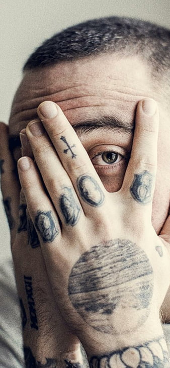

For a tragically brief time, Pittsburgh-based rapper and producer Mac Miller connected with legions of listeners through the appeal of both his curious, jazz-flecked instrumental style and heartfelt lyrics that laid bare his struggles with depression and addiction. Though his 2011 studio album debut Blue Slide Park topped the charts, his style and lyrical focus changed on subsequent, more personal releases like 2016's The Divine Feminine, which dominated the R&B and rap charts. Miller followed up with Swimming in 2018, but he died from an overdose one month after the album's release. His early output had an immediate resurgence as longtime fans mourned and those who just learned about the rapper explored his work for the first time. Posthumous releases followed Miller's death, such as 2020's Circles, and the 2025 release of "lost album" Balloonerism.
Early Life & Career
Born Malcolm James McCormick on January 19, 1992, in Pittsburgh, Pennsylvania, Mac Miller began his music career at just 14 years old. Growing up in the Point Breeze neighborhood, he was influenced by hip-hop legends like OutKast, Lauryn Hill, and A Tribe Called Quest. Mac taught himself to play piano, guitar, drums, and bass, showcasing his natural musical talent from a young age.
He started performing under the name "EZ Mac" before adopting "Mac Miller" in 2010. His early mixtapes, including "But My Mackin' Ain't Easy" (2007) and "The Jukebox: Prelude to Class Clown" (2009), helped him build a local following in Pittsburgh's hip-hop scene.
Musical Evolution
Mac Miller's artistry evolved dramatically throughout his career. Starting with the youthful exuberance of K.I.D.S. and Blue Slide Park, he gradually shifted toward more introspective and experimental sounds. His 2013 album "Watching Movies with the Sound Off" marked a turning point, showcasing darker themes and more sophisticated production.
The 2015 release "GO:OD AM" dealt directly with his struggles with substance abuse, while "The Divine Feminine" (2016) explored love and relationships with jazz and soul influences. His final studio album "Swimming" (2018) was his most vulnerable work, addressing mental health, heartbreak, and existential struggles with remarkable honesty.
Legacy & Impact
Mac Miller's influence extends far beyond his music. He was known for his genuine personality, his support of other artists, and his commitment to mental health awareness. His REMember Music Fund continues to provide resources for young musicians, and his philanthropic efforts in Pittsburgh have left a lasting impact on his community.
His posthumous album "Circles" (2020) served as a companion piece to "Swimming," completing what was intended as a concept album about the cyclical nature of life. The recent release of "Balloonerism" (2025) has given fans another glimpse into his creative process and unreleased material.
Mac Miller's music continues to inspire new generations of artists and fans. His honest approach to discussing mental health, addiction, and personal struggles has helped break down stigmas and create important conversations about these topics in hip-hop and beyond.
Explore His Music
Discover Mac Miller's complete discography and immerse yourself in his musical journey from his early mixtapes to his final works.
Login to Explore Albums